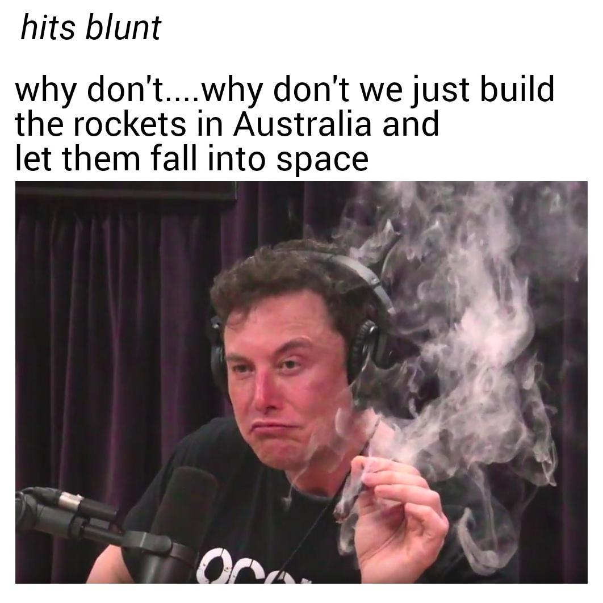
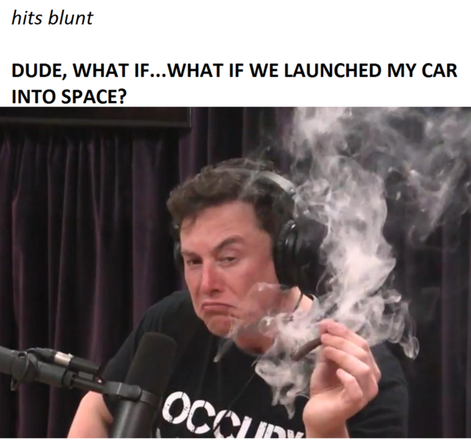

Aber keine Sorge, Cannabis ist legal in California.
Es hielt sich außerdem lange in den Trends und wurde nicht "overused" (zu oft benutzt).
| Original | Beispiele | Erklärung | Bewertung |
|
  | Elon Musk hat in einer Talkshow vom Moderator Cannabis bekommen und da beide dann ziemlich zugedröhnt waren machte
Elon Musk plötzlich so ein Gesicht nach einem tiefen Zug. So entstand das Bild. Da Elon Musk ein bekannter Mann ist, machten sich viele über seinen Gesichtsausdruck lustig, indem sie sein Gesicht als Meme verwendeten.
Dieser "bekiffte" Blick, verbunden mit kurzen Sprüchen oder Gedanken machten das Meme sehr populär im Herbst letzten Jahres.
Aber keine Sorge, Cannabis ist legal in California. |
Das Meme bewerte ich mit 7/10. Elon Musk ist eine berühmte Person, deswegen ist so faszinierend, dass er plötzlich Cannabis raucht. Die Themen Drogen und Elon Musk sind zusammen so absurd, sodass das Meme für mich einen hohen Wert besitzt.
Es hielt sich außerdem lange in den Trends und wurde nicht "overused" (zu oft benutzt). |